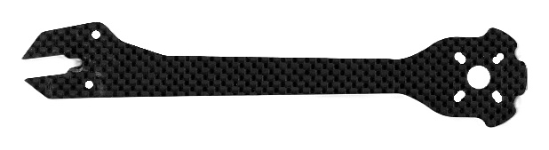

Task 4: Install the motors
Mount all four motors to the arms using the short motor screws from the EMAX motor kits.
Day 2–3Cadet BSee blockers below
Task 4: Install the motors
Mount all four motors to the arms using the short motor screws from the EMAX motor kits.
Blockers
Complete these tasks first before you start this page.
Not marked complete

Each motor kit contains one motor and separate hardware bags. Use the short 8 mm motor screws for mounting.

Keep the motor wires running straight along each arm.
Parts required
- Four EMAX Pro Series 2808 motors with accessories
- Lower frame
Tools required
- 2.5 mm Allen key
Steps
- Open one motor package at a time and keep that motor’s accessories together until you identify the correct bolts.
- Find the two black-bolt bags. One contains 8 mm screws and one contains 10 mm screws.
- Use the 8 mm screws for motor mounting. Return the 10 mm screws to the parts bin.
- Place one motor at the end of an arm and align its mounting holes. Route the motor wires along the arm, not off to the side.
- Install all four motor screws by hand first, then repeat for the other three motors.
- After all four screws on a motor have started, snug them with the 2.5 mm Allen key in a crisscross pattern.
- Collect the propeller nuts that ship with the motors and store them in the propeller bag so they are not lost.
Common errors
- Using the long 10 mm motor screws instead of the 8 mm screws.
- Tightening one motor screw fully before the other three are started.
- Routing motor wires off the side of the arm where they may later interfere with props or cable ties.
- Losing the propeller nuts that came with the motors.